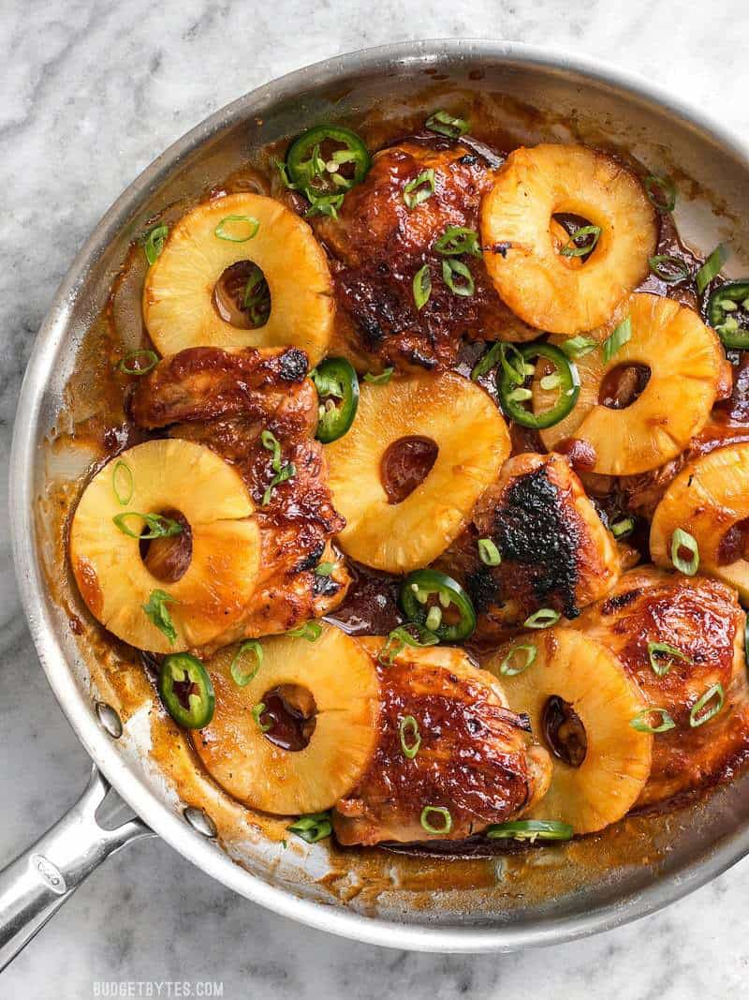

Skillet Pineapple BBQ Chicken

Description
This is always a treat when I'm craving something sweet and simple with a lot of protein!
This recipe comes from my favorite recipe website: BudgetBytes!
Ingredients
- 1 Tbsp cooking oil
- 6 boneless skinless chicken thighs (about 2.3 lbs.)
- Pinch Salt and pepper
- 20 oz. can Pineapple slices in juice
- 1/2 cup BBQ sauce
- 1 jalapeño (optional), sliced thinly
- 2 green onions, sliced
Steps
- Heat a large skillet over medium. Once hot add the cooking oil and swirl to coat the surface. While waiting for the skillet to heat, season both sides of the chicken thighs with a pinch of salt and pepper.
- Once the skillet is hot and the oil is shimmering, add the chicken thighs and cook until golden brown on each side and cooked through. Remove the cooked chicken to a clean plate.
- While the chicken is cooking, drain and reserve the juice from the canned pineapple slices.
- After removing the chicken from the skillet, turn the heat down to low and add about 1/2 cup of the reserved pineapple juice. Stir to dissolve and loosen the browned chicken bits from the bottom of the skillet. Once everything has been loosened from the skillet, add the BBQ sauce and stir until a thick sauce forms. Taste the sauce and add salt if needed. If your sauce gets too thick, simply add another splash of the reserved pineapple juice.
- Add the cooked chicken thighs and pineapple slices to the skillet, dredging both sides in the pineapple BBQ sauce. Spoon any excess sauce over the chicken.
- Adjust your oven's rack so that the skillet will be about 6 inches from the broiler unit and turn the broiler on to high. Transfer the skillet to the oven and broil for about 5 minutes, or just until the BBQ sauce caramelizes on the edges of the chicken and pineapple. If you don't have an oven safe skillet** you can transfer the chicken, pineapple, and ALL of the sauce to a casserole dish for broiling, or skip the broiling step and enjoy as is.
- After broiling, sprinkle the sliced jalapeño and green onion over top, and then serve.
Home